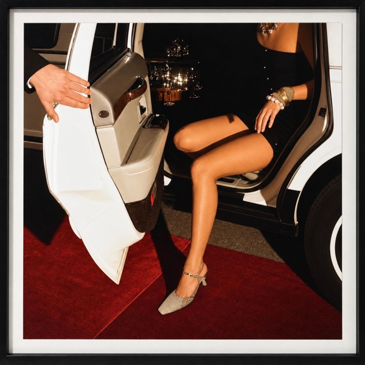
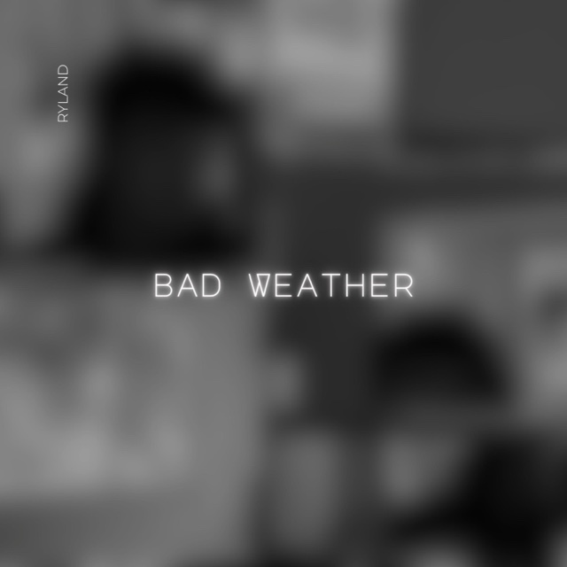
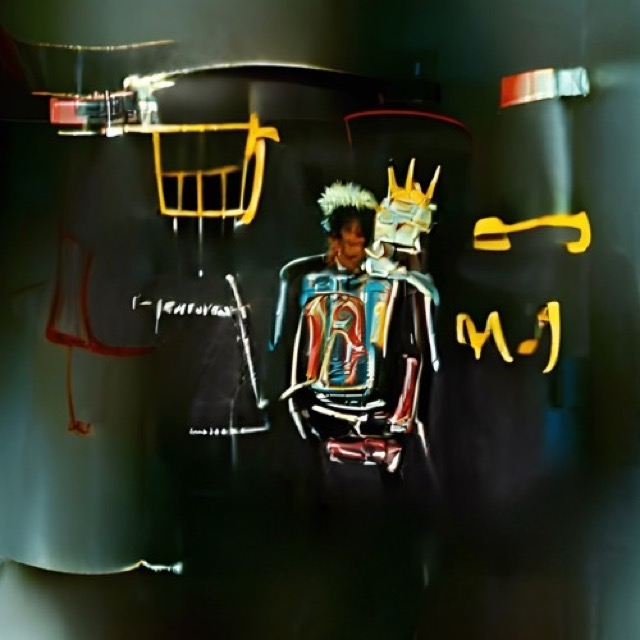
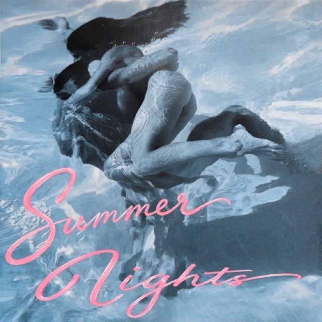
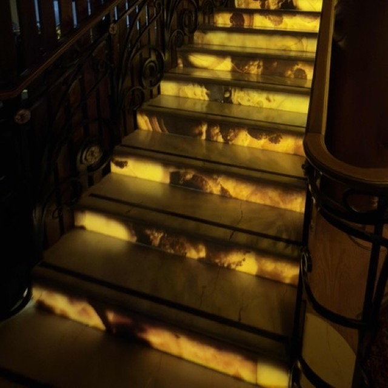
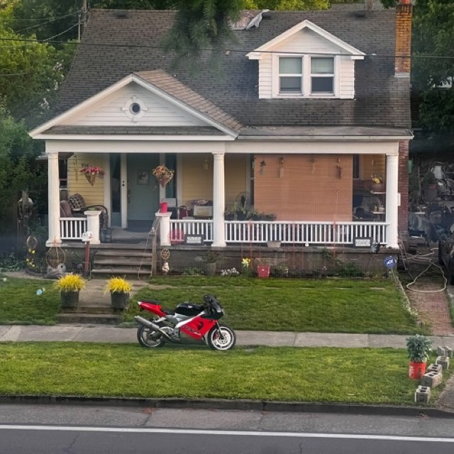

Artist sync representation for Bodega Sync · November 2026
13 artist songs for Bodega Sync
A 13-song catalog for artist sync representation, with alternative pop for fashion, house for nights out, and songs for romantic drama, climactic scenes and long drives.
RYLAND controls 100% of the master and the publishing.
-
 be that girl again Friends and lovers · fashion · nightlife3:04
be that girl again Friends and lovers · fashion · nightlife3:04 -

looking for you Night-out montage · mutual admiration · bad timing2:25 -
 Denial Love · fast driving · cinematic1:54
Denial Love · fast driving · cinematic1:54 -
 Tough Imagined night · training · chase1:56
Tough Imagined night · training · chase1:56 -
 So Delighted When She Speaks Vampire film · gothic · grunge3:14
So Delighted When She Speaks Vampire film · gothic · grunge3:14 -
get into my face Dating now · anger · climactic scene2:50
-
08.18.23 glisan Breakup · losing control · short cue0:45
-

Pretty With Short Hair Romantic drama · somber · wanting to be desired2:08 -
 everlasting Experimental · quiet admiration · floating4:00
everlasting Experimental · quiet admiration · floating4:00 -

Dopamine Long night drives · coming-of-age · melancholy3:00 -

Summer Nights A story drawn partly from his life3:01 -

a couple nights ago First date · stood up · bittersweet2:47 -

get by rn Optimistic · moving on · minimal2:00


About RYLAND
RYLAND makes alternative pop in Portland, Oregon, making songs that strike him deep, songs he’s in awe of. He writes, plays, sings, records and produces his own music, whatever gets the feeling across. On “*Showing Friends”, each song is titled with the date it was made.
From Portland, Oregon · Independent · BMI writer
be that girl again
Friends, then sleeping together, then ‘just friends’ again: the exhausting back and forth when nobody commits.
A chorus for fashion and beauty campaigns.
- Mood
- Exhausted by the back and forth
- Best for
- Fashion spots built around the chorus
- Nightlife montages
- Women’s cosmetics and beauty campaigns
- Energy
- Strongest moment: 2:07. Use the chorus.
- Themes
- Friendship turning sexual, mixed signals, no commitment
- Lyrics
- CleanVerse one names a real person (Sadie). The chorus is the usable cut.
- Vocal
- Male lead vocal
- Credits
- Written and produced by RYLAND, co-produced by Colby Wilder
- Genres
- Alternative pop, darkwave, electronic
- ISRC
- QZNWY2617606
Show lyricsHide lyrics
Don't want to ruffle no feathers Who woulda said that it be better If I never loved Sadie I'm having dinner I could use your discretion It was a trick
I don't wanna end Just wanna be a girl So get it out of your head So I can be that girl again I'm staying out of your bed Tell the day I fold again Get it out of your head So I can be that girl again
All I did was try for you Nos in the tank, full up Cash in the bank, rolled up Photos and frames, with dust A circle chain, no rust Not entertained enough Or far to dangerous (All I) All I did was try for you Nos in the tank, full up Cash in the bank, rolled up Photos and frames, with dust A circle chain, no rust Not entertained enough Or far to dangerous
I don't wanna end Just wanna be a girl So get it out of your head So I can be that girl again I'm staying out of your bed Tell the day I fold again Get it out of your head So I can be that girl again Be that girl again So I can be that girl again Be that girl again So I can be that girl again
looking for you
Years after he told her he loved her and she said she didn’t feel the same, she tells him she did and just didn’t know it, but they still aren’t together.
House for a night-out montage, crowds and clubs.
- Mood
- Exciting, with the feeling of a night out
- Best for
- A night-out montage
- Moving through a crowd
- Club scenes
- Energy
- House beat. Strongest moment: 1:16.
- Themes
- Mutual admiration, bad timing, believing they will end up together. Chapter 2 with the same person as Denial and everlasting.
- Lyrics
- Clean
- Vocal
- Male lead vocal
- Credits
- Written and produced by RYLAND
- Genres
- Alternative pop, house, club
- ISRC
- QT9XL2693122
Show lyricsHide lyrics
And I hope you don't mind that I said exactly what was on my mind Gonna lay down, cause I know it's not the same when you're not around
And I hope you don't mind that I said exactly what was on my mind Gonna lay down, cause I know it's not the same when you're not around And I hope you don't mind that I said exactly what was on my mind Gonna lay down, cause I know it's not the same when you're not around
And I told her I'm always looking for you Told her I'm always looking for you
And I hope you don't mind that I said exactly what was on my mind Gonna lay down, cause I know it's not the same when you're not around
Told ya I'm always looking for you Told ya I'm always looking for you
When I told you that I loved you babe And you told me you don't feel the same Four years later and you now just claim That your heart was with me in the end
Denial
Barely making rent on Guitar Center’s noon shift, he sees the off-and-on girl from his gym with another guy and wishes he could speed up to the future he feels coming.
For love scenes and fast driving.
- Mood
- Cinematic, fast and fun
- Best for
- Love scenes
- Fast driving sequences
- Cinematic scenes
- Energy
- Fun production. Strongest moment: 1:21.
- Themes
- Off-and-on love, feeling not enough, belief in his future. Chapter 1 of one relationship, continued in looking for you and everlasting.
- Lyrics
- CleanNames a car brand (Mercedes).
- Vocal
- Male lead vocal
- Credits
- Written and produced by RYLAND
- Genres
- Alternative pop, alternative R&B
- ISRC
- QZES62318367
Show lyricsHide lyrics
Might not have much money baby But I gotta heart that'll beat for two Got no new twenty three Mercedes Gotta nine to five and it starts at noon If you could only wait awhile I could make it worth your while Loving him in denial Loving him in denial If you could only wait awhile I could make it worth your while
Might not have much money baby But I gotta heart that'll beat for two Got no new twenty three Mercedes Gotta nine to five and it starts at noon If you could only wait awhile I could make it worth your while Loving him in denial Loving him in denial If you could only wait awhile I could make it worth your while Loving him in denial Loving him in denial
If you could only wait awhile I could make it worth your while Loving him in denial Loving him in denial
Tough
He met her once and never saw her again, then imagined the sexual tension of a night together from different perspectives.
Heavy drums for training and chase scenes.
- Mood
- Sexual tension
- Best for
- Gym and training sequences
- Fast driving
- Speed and chase scenes
- Energy
- Heavy drums, repeated hook.
- Themes
- Desire and fantasy. The imagined night with the woman from So Delighted When She Speaks.
- Lyrics
- CleanTwo mild words: “damn” and “hell”.
- Vocal
- Male lead vocal
- Credits
- Written and produced by RYLAND
- Genres
- Alternative pop, electronic, dance
- ISRC
- QZK6N2557247
Show lyricsHide lyrics
But you wanna get even It's so lonely to sleep at night You're just so evil Without you I'm cold as ice
You're so damn tough You're tough You're tough You're tough You're tough You're tough You're tough And you want it
You're tough You're tough You're tough You're tough You're tough You're tough You're tough And you want it
You're tough You're tough You're tough You're tough You're tough You're tough You're tough And you want it all night
You're tough You're tough You're tough You're tough You're tough You're tough You're tough
Don't think We could get Much harder Much faster
Came in Showed me how to live Do it better
Goes so well You can put me through hell Should we take this inside No pain in your eyes
Nowhere left to be Let's take our time
You're tough You're tough You're tough You're tough You're tough You're tough You're tough And you want it
You're tough You're tough You're tough You're tough You're tough You're tough You're tough And you want it
You're tough You're tough You're tough You're tough You're tough You're tough You're tough And you want it all night
You're tough You're tough You're tough You're tough You're tough You're tough You're tough
So Delighted When She Speaks
A few hours with her made him understand the stories of Rome going to war for love: a city destroyed to win back that feeling.
For a vampire film closing scene and end credits.
- Mood
- Grunge and momentous
- Best for
- Vampire film closing scene
- Vampire film end credits
- Gothic dark romance
- Energy
- Strongest moment: 2:20.
- Themes
- Wanting one more night. Two sides of one meeting: Tough imagines the night that never happened.
- Lyrics
- CleanA metaphor: crumbling walls, a baby screaming, “blood is flowing”, a city destroyed to win someone back. No strong words.
- Vocal
- Male lead vocal
- Credits
- Written and produced by RYLAND
- Genres
- Alternative pop, indie pop
- ISRC
- QZNWQ2573514
Show lyricsHide lyrics
Crumbling walls Baby's screaming Blood is flowing No one else around
There's nothing standing Just pretending I didn't do it all
Just have one more night Just to look in your eyes
So delighted when she speaks Cause nothing touches me lately And I fall onto my knees If you want it you can have it There ain't nothing at all
Oh-oh-oh-oh-oh-oh-oh-oh-oh
Crumbling walls Baby's screaming Blood is flowing No one else around
There's nothing standing Just pretending I didn't do it all
So delighted when she speaks Cause nothing touches me lately And I fall onto my knees If you want it you can have it There ain't nothing at all
Oh-oh-oh-oh-oh-oh-oh-oh-oh Oh-oh-oh-oh-oh-oh-oh-oh-oh
get into my face
Dating people who say they want to be alone while spending all day on their phones leaves him angry and feeling inadequate.
The middle chorus into the guitar solo for a climactic scene.
- Mood
- Angry, inadequate, introverted grunge
- Best for
- Climactic film scenes
- Climactic episode scenes
- Dating scenes shaped by distance and phone screens
- Energy
- Strongest moment: 1:35, the middle chorus into the guitar solo.
- Themes
- Dating now, feeling inadequate, wanting connection while everyone stays on their phones.
- Lyrics
- Clean
- Credits
- Written and produced by RYLAND. Guitar, bass and drums by Thomas Lee, Thomas Mckay and Colby Wilder.
- Genres
- Grunge
- ISRC
- QT3FA2640011
08.18.23 glisan
Written on Glisan Street in Portland on August 18, 2023, the day one of his worst breakups wrecked him, even though he saw it coming.
A short 45-second cue for the moment breakup news hits.
- Mood
- Wrecked and out of control
- Best for
- The moment breakup news hits
- Losing control after a breakup
- A short 45-second cue for a breakup he saw coming and could not control
- Energy
- Use the whole 45 seconds.
- Themes
- Knowing a breakup is coming, being wrecked by the news, losing control
- Lyrics
- Clean
- Vocal
- Male lead vocal
- Credits
- Written and produced by RYLAND
- Genres
- Alternative pop, indie pop
- ISRC
- QZWFK2432936
Show lyricsHide lyrics
Walk in flowers on the grate And your talking Don't have to hear a thing I'm not watchin Bad crash but I ain't stoppin
Just cause I don't love you now Doesn't mean I'll never love you ever Just cause I don't love you now Doesn't mean I'll never love you ever Just cause I don't love you now Doesn't mean I'll never love you ever Just cause I don't love you now Doesn't mean I'll never love you ever Ever
Pretty With Short Hair
In a college town where everyone looks the same, he buzzes his head and wants to be desired as himself, then spends a stormy day alone inside.
Somber house for romantic drama.
- Mood
- Somber house
- Best for
- Romantic drama
- Commercials using the beat
- Rainy days alone at home
- Energy
- Strongest moment: 1:13.
- Themes
- Wanting to be desired as himself, looking different, being alone.
- Lyrics
- ExplicitExplicit for one drug-use line.
- Credits
- Written and produced by RYLAND
- Genres
- House
- ISRC
- QZK6Q2350406
Show lyricsHide lyrics
I just wana look pretty with short hair Have a car to drive and that would take me anywhere I'm Tired of sleeping on my own I think I'm bruised baby Hm hey I guess we'll figure it out
I took some drugs up on a Tuesday I'm in my house And now I'm climbing up the walls I guess we'll figure it out The opposite of what I'm doing what would you say That in the end were all the same and we'll just figure it out
I just wana look pretty with short hair Have a car to drive and that would take me anywhere I'm Tired of sleeping on my own I think I'm bruised baby Hm hey I guess we'll figure it out
I took some drugs up on a Tuesday I'm in my house And now I'm climbing up the walls I guess we'll figure it out The opposite of what I'm doing what would you say That in the end were all the same and we'll just figure it out
everlasting
After she told him she used to love him, he wrote this from the feeling of admiring her without having her.
For quiet scenes of accepting a love that stays apart.
- Mood
- Quiet, accepting and floating
- Best for
- Admiring someone you can’t have
- Quiet scenes of accepting a love that stays apart
- Floating through memories of someone
- Energy
- Strongest moment: 1:43.
- Themes
- Admiration without possession. Chapter 3 with the same person as Denial and looking for you.
- Lyrics
- Clean
- Vocal
- Male lead vocal
- Credits
- Written and produced by RYLAND
- Genres
- Ambient, art pop, alternative R&B
- ISRC
- QZNWR2646208
Show lyricsHide lyrics
Where did my friends go? And my family's home to give never know Feels so deep, deep got nobody to hold And Im so lonely don't know where you are Know what you want
Airplanes flying to take me down Gotta let going around like a ferris wheel now Im always away Keys to my place Always sits empty I know its so cold And the years pass by And memories everlasting
The cities so cold in the winter God forbid I had you with me
And we judge never move with the self You always looked so good in black against ya Even though we Darling know that ill leave
Airplanes flying to take me down Gotta let going around like a ferris wheel now Im always away Keys to my place Always sits empty I know its so cold And the years pass by And memories everlasting
And we judge never move with the self You always looked so good in black against ya Even though we Darling know that ill leave
Airplanes flying to take me down Gotta let going around like a ferris wheel now Im always away Keys to my place Always sits empty I know its so cold And the years pass by And memories everlasting
Dopamine
He looks successful at work but takes long drives instead of going home, watching time pass as he lives on his own for the first time.
For long night drives and first-job moments.
- Mood
- Melancholy indie pop
- Best for
- Long night drives
- Coming-of-age and first-job moments
- Quiet “is this it?” scenes
- Energy
- Strongest moment: 0:00. Use about 45 seconds.
- Themes
- Looking successful while avoiding his own life, getting older, living on his own.
- Lyrics
- Clean
- Credits
- Written and produced by RYLAND
- Genres
- Indie pop
- ISRC
- QZHN62241308
Show lyricsHide lyrics
What if we could watch the time fly Ain't it crazy how the time flys Are we better to watch the clock Better not give a thought We could watch the sun rise Sell you property on the coast side Even find it with some closed eyes Some closed eyes
Took a detour around the universe Buy me some jewelry you could say i'm first But the man got some words so that'd be quick to burst Quick to burst I said its quick ta
When running away will only get you so far And your stuck in your ways until it gets to hard When you don't understand everything that you are So why don't you find ya So why don't you find ya
What if we could watch the time fly Ain't it crazy how the time flys Are we better to watch the clock Better not give a thought We could watch the sun rise Sell you property on the coast side Even find it with some closed eyes Closed eyes
What if we could watch the time fly Ain't it crazy how the time flys Are we better to watch the clock Better not give a thought We could watch the sun rise Sell you property on the coast side Even find it with some closed eyes Closed eyes
Summer Nights
A story drawn partly from his life: traveling through Mexico with a woman who showed him around and spoke Spanish, warm and sunny, desert, then greenery and ocean.
Nostalgic and cinematic, for dancing that fades like old photos.
- Mood
- Nostalgic and cinematic
- Best for
- Dancing that fades away
- Memories like faded photos
- Summer and travel flashbacks
- Energy
- Strongest moment: 1:38.
- Themes
- A trip with someone new, warm days, memories that fade like old photos.
- Lyrics
- Clean
- Credits
- Co-written with Colby Wilder. Produced by RYLAND.
- Genres
- Alternative pop
- ISRC
- QT6HJ2653714
a couple nights ago
They hit it off the first night, and he already knew she wouldn’t follow through. Then she bailed on the dates.
Surf rock and bedroom pop for a first date with a catch.
- Mood
- Sunny with a bittersweet edge
- Best for
- First dates with a catch
- Being stood up
- Sunny scenes with a bittersweet edge
- Energy
- Strongest moment: 1:25.
- Themes
- A first night that clicks, knowing it won’t last, being stood up.
- Lyrics
- Clean
- Credits
- Written and produced by RYLAND
- Genres
- Surf rock, bedroom pop, alternative
- ISRC
- QZWFH2647527
Show lyricsHide lyrics
Get dressed How we met one touch In this gen not like How it's always these days
It's fine, if that's how it goes Read between the lines That came out your mouth a couple nights ago
And I could split your difference if at all fifty-fifty Fell in love with a villain, another one that's shifty My head gets hot, hands on deck and the clock don't stop I play hard to get, hard to be patient Gotta admit, with all of my vision Scroll the web, on the edge, vicious Filling up a little my luck
It's fine, if that's how it goes Read between the lines, that come out your mouth a couple nights ago
It's fine, if that's how it goes Read between the lines, that come out your mouth a couple nights ago
get by rn
After a hard stretch with someone, it’s okay now and there’s no need to talk about it. He just moved, life is changing, and the sad things are remembered but manageable.
Optimistic melancholy for minimal, clean ads and new chapters.
- Mood
- Optimistic melancholy
- Best for
- Minimal, clean product ads
- Moving on and new-chapter scenes
- Moving into a new place
- Energy
- Strongest moment: 1:01.
- Themes
- Getting through, moving on together, a new place and a new chapter.
- Lyrics
- Clean
- Credits
- Written and produced by RYLAND
- Genres
- Alternative pop
- ISRC
- QZNWS2436754
Show lyricsHide lyrics
And we can get by rn, so good Whhich you I dont even need to talk rn, its full force And we can get by rn
And we can get by rn, so good Whhich you I dont even need to talk rn, its full force And we can get by rn, so good Whhich u you I dont even need to talk rn, its full force And we can get
Clearance and files
- Clearance
- One-stop: RYLAND controls 100% of the master and the publishing.
- Master
- be that girl again: RYLAND (Ryland Scott Adams), 100%. Co-producer Colby Wilder has cleared it.looking for you, Denial, Tough, So Delighted When She Speaks, get into my face, 08.18.23 glisan, Pretty With Short Hair, everlasting, Dopamine, Summer Nights, a couple nights ago and get by rn: RYLAND (Ryland Scott Adams), 100%
- Writer
- Ryland Scott Adams, 100%, BMI, IPI 01377555214
- Publishing admin
- DistroKid Publishing for be that girl again, Denial, Tough, So Delighted When She Speaks, get into my face, 08.18.23 glisan, Pretty With Short Hair, Dopamine, a couple nights ago and get by rn
- Label
- Independent
- Released
- 2022, 2023, 2024, 2025 and 2026
be that girl again is co-produced by Colby Wilder. These are released artist recordings for sync representation.
| Song | Full mix MP3 | Full-length WAV | Instrumental | Stems | Clean |
|---|---|---|---|---|---|
| be that girl againQZNWY2617606 | On request | On request | On request | On request | Not needed |
| looking for youQT9XL2693122 | On request | On request | On request | On request | Not needed |
| DenialQZES62318367 | On request | On request | On request | On request | Not needed |
| ToughQZK6N2557247 | On request | On request | On request | On request | Not needed |
| So Delighted When She SpeaksQZNWQ2573514 | On request | On request | On request | On request | Not needed |
| get into my faceQT3FA2640011 | On request | On request | On request | On request | On request |
| 08.18.23 glisanQZWFK2432936 | On request | On request | On request | On request | Not needed |
| Pretty With Short HairQZK6Q2350406 | On request | On request | On request | On request | On request |
| everlastingQZNWR2646208 | On request | On request | On request | On request | Not needed |
| DopamineQZHN62241308 | On request | On request | On request | On request | Not needed |
| Summer NightsQT6HJ2653714 | On request | On request | On request | On request | On request |
| a couple nights agoQZWFH2647527 | On request | On request | On request | On request | Not needed |
| get by rnQZNWS2436754 | On request | On request | On request | On request | Not needed |
Full-length WAVs, instrumentals and stems on request.